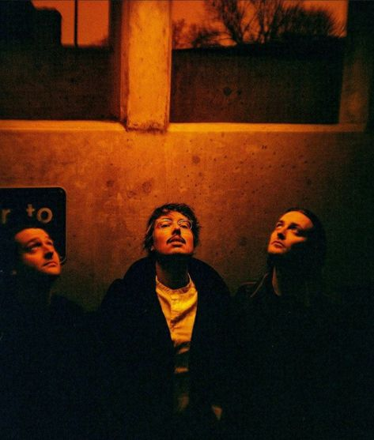

One of my personal interests is the band Joywave. They are a trio with 2 other members that tour with them, and they have been active since 2010. They are from Rochester, New York. Joywave's music is mainly indie and alternative rock with many electronic elements. I have been listening to Joywave since 2022 when I went to a concert that they were coheadlining at, and my favorite songs are Mr. Eastman and Bad Dreams. They will also be releasing a new album this year, which will be their 5th full length